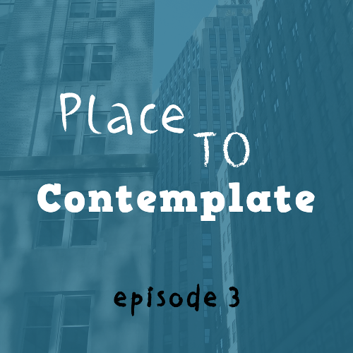
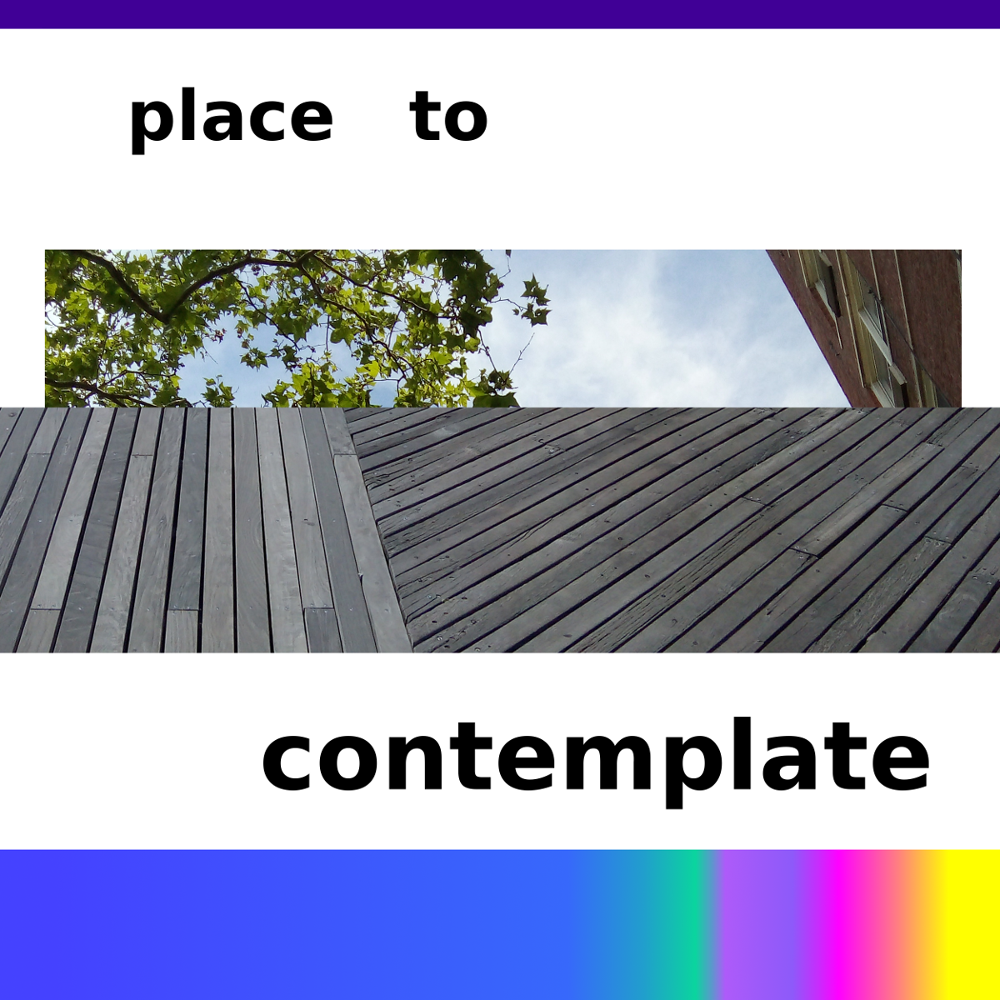

Place to Contemplate is a podcast about creativity and thought. An audio-diary of sorts, it delves into Dan's ideas and recent experiences.
To hear a verbal explanation, listen to the most recent episode!
Episode 3

In episode 3, I further develop the ideas for the show which I had brainstormed in episodes 1 and 2, focusing on recent experiences, creativity, and contemplation. I discuss a youtube prank between two famous actors, debut two new segments ‘Time Talk’ and ‘Blank Pages’, and expand the show to include sound collages and musical transitions.
Listen on:
Episode 2

In episode 2, I decide I want dulcimer theme music. I describe guilt over sleeping in, and discuss daily creativity. I detail some of my ideas for the show, including a focus on thought-processes.
In episode 1, I brainstorm about podcasting. I describe a recent situation where I was locked out of my apartment. I talk about the origin of the podcast's name, and speculate that the show can be about delving into other people's worlds.